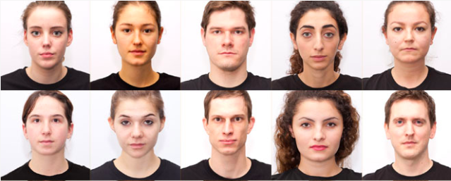

Back to start
Without further ado, I present to you, the tardy solution to all of your suffering:
Face stimulus and tool collection
This is ongoing, please continue to send any recommendations to me (email, twitter, etc.)! Thanks to many colleagues for contributions as we maintain this.
Many of these have existed online in the past (I collected old collections as well, below), but many are filled now with dead links, and more importantly, terrible stimuli (due to quality and other decisions).
Below, you'll find two main sections:
__________________________________________________________
Face stimulus sets
Top quality /most prominent options:
*NOTE: Read descriptions! Many databases have many variations of their stim, by angle, eye gaze, social category, trait evaluation, etc. that may not be in the image! Also, these example images were all taken from public websites and articles. Please let me know right away if they should not have been public, and should be taken down here as well. Further, I am trying to collect publically available data about the stim - let me know if you find perception ratings of any! E.g., attractiveness, age, gender, trustworthiness, etc.- The Chicago Face Database: "The Chicago Face Database was developed at the University of Chicago by Debbie S. Ma, Joshua Correll, and Bernd Wittenbrink. The CFD is intended for use in scientific research. It provides high-resolution, standardized photographs of male and female faces of varying ethnicity between the ages of 17-65. Extensive norming data are available for each individual model. These data include both physical attributes (e.g., face size) as well as subjective ratings by independent judges (e.g., attractiveness). Detailed information about the construction of the database and the available norming data can be found in Ma, Correll, & Wittenbrink (2015)." Comes with trait ratings and extra data on perception of the faces!
- The Max Planck FACES Database: "171 younger (n = 58), middle-aged (n = 56), and older (n = 57) women and men displaying each of six facial expressions: neutrality, sadness, disgust, fear, anger, and happiness. It comprises two sets of pictures per person and per facial expression, resulting in a total of 2,052 images."
- Radboud Faces Database: "67 models (including Caucasian males and females, Caucasian children, both boys and girls, and Moroccan Dutch males) displaying 8 emotional expressions... Accordingly to the Facial Action Coding System, each model was trained to show the following expressions: Anger, disgust, fear, happiness, sadness, surprise, contempt, and neutral. Each emotion was shown with three different gaze directions and all pictures were taken from five camera angles simultaneously." Here are some trait ratings for some of these faces via Bastian Jaeger!
- NimStim (article here): "A set of face stimuli called the NimStim Set of Facial Expressions is described. The goal in creating this set was to provide facial expressions that untrained individuals, characteristic of research participants, would recognize. This set is large in number, multiracial, and available to the scientific community online. The results of psychometric evaluations of these stimuli are presented. The results lend empirical support for the validity and reliability of this set of facial expressions as determined by accurate identification of expressions and high intra-participant agreement across two testing sessions, respectively."
- Karolinska Directed Emotional Faces: "Participants: 70 (35 males and 35 females). Age: m 25 years, ranging from 20 to 30 years. Expressions: 7 (neutral, happy, angry, afraid, disgusted, sad, surprised). Angles: 5 (-90, -45, 0, +45, +90 degrees: i.e. full left profile, half left profile, straight, half)". Trait ratings available upon request via Alex Todorov's lab.
- Center for Vital Longevity (Park Aging Lab; PAL) Database: From their abstract, "...a database of 575 individual faces ranging from ages 18 to 93. Our database was developed to be more representative of age groups across the lifespan, with a special emphasis on recruiting older adults. The resulting database has faces of 218 adults age 18-29, 76 adults age 30-49, 123 adults age 50-69, and 158 adults age 70 and older."
- 10k US Adult Faces Database: Large, high quality collection of naturalistic face images with plenty of data to go along. "This database contains 10,168 natural face photographs and several measures for 2,222 of the faces, including memorability scores, computer vision and psychology attributes, and landmark point annotations. The face photographs are JPEGs with 72 pixels/in resolution and 256-pixel height. The attribute data are stored in either MATLAB or Excel files. Landmark annotations are stored in TXT files. Any parts of the database may be used upon citation of the article and acceptance of the license agreement. To obtain the database, fill out the following form to get access information. The psychology attributes now include participant information, so you can now easily study subject-centric (versus item-centric) face and memory effects. The database now additionally includes a software tool that allows you to export custom image sets from the database for your own research, based on our collected attributes and memorability information. (Ex: You can now easily create a stimulus set of faces based on memorability, gender, race, emotion, attractiveness, etc)." (Thanks for the tip, Jin Goh!)
- Todorov Lab stim: Amazing sets of CG (FaceGen) face stim, along many different personality trait judgments (e.g., trustworthiness, dominance... etc.)
- Face Research Lab London Set: Images are of 102 adult faces 1350x1350 pixels in full colour. Template files mark out 189 coordinates delineating face shape, for use with Psychomorph or WebMorph.org. Self-reported age, gender and ethnicity are included in the file london_faces_info.csv. Attractiveness ratings (on a 1-7 scale from "much less attractiveness than average" to "much more attractive than average") for the neutral front faces from 2513 people (ages 17-90) are included in the file london_faces_ratings.csv. (Thanks DongWon Oh!)
- Oslo face database: "We have created a database of photographs of faces called the Oslo Face Database. It consists of ~200 male and female faces of neutral expression with three gaze directions: left, center and right. The photos were taken in 2012 and the faces are students from the University of Oslo. We have collected ratings of attractiveness, trustworthiness and perceived dominance of faces. We have hand-drawn regions of interest (ROIs, see image) for a subset of these faces for use in eye-tracking analysis. For pupil measurements we also have available luminance-matched gray images that can be used for baseline pupillometry. (Thanks, Jennifer Yih!)
- The MR2 face database: "The MR2 is a multi-racial, mega-resolution database of facial stimuli. It contains 74 full-color images of men and women of European, African, and East Asian descent."
- Basel face database: "The aim of the Basel Face Database is to systematically deconfound faces and personalities. Therefore, we took standardized portrait photographs of 40 different individuals. We separately reduced and enhanced the facial information perceived as agentic and communal (Big Two), open to experience, conscientious, extraverted, agreeable, and neurotic (Big Five) in these faces. In two validation studies we show that all seven dimensions were successfully modeled in the 40 database faces." (unsure where to download, maybe contact them? Thanks for the lead, John Sciarappo!) 
- 'Heads' stimulus set, with morph scripts: Stimuli from 'Heads', a photo collection book by Alex Kayser. High quality bald faces. This is provided via Goldstone & Steyvers, 2001 - Journal of Experimental Psychology. Via Steyvers's website.
- The Bogazici face database: "Many sets of human facial photographs produced in Western cultures are available for scientific research. We report here on the development of a face database of Turkish undergraduate student targets. High-resolution standardized photographs were taken and supported by the following materials: (a) basic demographic and appearance-related information, (b) two types of landmark configurations (for Webmorph and geometric morphometrics (GM)), (c) facial width-to-height ratio (fWHR) measurement, (d) information on photography parameters, (e) perceptual norms provided by raters. We also provide various analyses and visualizations of facial variation based on rating norms using GM. Finally, we found that there is sexual dimorphism in fWHR in our sample but that this is accounted for by body mass index. We present the pattern of associations between rating norms, GM and fWHR measurements. The database and supporting materials are freely available for scientific research purposes."
- Young Adult White Faces with Manipulated Versions: "This image set contains images of 20 male and 20 female young adult (mean age = 19.3) white students from a university in Onatrio, Canada. The images have been aligned on pupils and delineated using WebMorph.org. All images are JPGs at 1350x1800 pixels and have masked and unmasked versions. The files averages.txt and transforms.txt are included to explain the steps in WebMorph that construct the manipulated versions."
- High quality white fe/male stimuli varying in health, gender, and symmetry: From "No evidence that preferences for facial masculinity track changes in women’s hormonal status" (Jones et al., preprint here).
- NIMH-ChEFS adolescent face stimulus set: "With emergence of new technologies, there has been an explosion of basic and clinical research on the affective and cognitive neuroscience of face processing and emotion perception. Adult emotional face stimuli are commonly used in these studies. For developmental research, there is a need for a validated set of child emotional faces. This paper describes the development of the NIMH Child Emotional Faces Picture Set (NIMH-ChEFS), a relatively large stimulus set with high quality, color images of the emotional faces of children. The set includes 482 photos of fearful, angry, happy, sad and neutral child faces with two gaze conditions: direct and averted gaze. In this paper we describe the development of the NIMH-ChEFS and data on the set’s validity based on ratings by 20 healthy adult raters. Agreement between the a priori emotion designation and the raters’ labels was high and comparable with values reported for commonly used adult picture sets. Intensity, representativeness, and composite “goodness” ratings are also presented to guide researchers in their choice of specific stimuli for their studies. These data should give researchers confidence in the NIMH-ChEFS’s validity for use in affective and social neuroscience research."
- Developmental Emotional Faces Stimulus Set: "The DEFSS is a standardized set of photographic stimuli, including both child and adult faces, that has been validated by participants across a range of ages. It consists of 404 validated facial photographs of people between 8 and 30 years old displaying five different emotional expressions: happy, angry, fearful, sad, and neutral." Website is slow, but scroll down to find.
- Perceived emotion genuineness: normative ratings for popular facial expression stimuli and the development of perceived-as-genuine and perceived-as-fake sets: Important! Rating on emotional expression stim from all your favorite databases, so that you can identify stimuli that are actually perceived as genuinely expressing emotion. See their Supplementary Materials for this data. "In everyday social interactions, people's facial expressions sometimes reflect genuine emotion (e.g., anger in response to a misbehaving child) and sometimes do not (e.g., smiling for a school photo). There is increasing theoretical interest in this distinction, but little is known about perceived emotion genuineness for existing facial expression databases. We present a new method for rating perceived genuineness using a neutral-midpoint scale (-7 = completely fake; 0 = don't know; +7 = completely genuine) that, unlike previous methods, provides data on both relative and absolute perceptions. Normative ratings from typically developing adults for five emotions (anger, disgust, fear, sadness, and happiness) provide three key contributions. First, the widely used Pictures of Facial Affect (PoFA; i.e., "the Ekman faces") and the Radboud Faces Database (RaFD) are typically perceived as not showing genuine emotion. Also, in the only published set for which the actual emotional states of the displayers are known (via self-report; the McLellan faces), percepts of emotion genuineness often do not match actual emotion genuineness. Second, we provide genuine/fake norms for 558 faces from several sources (PoFA, RaFD, KDEF, Gur, FacePlace, McLellan, News media), including a list of 143 stimuli that are event-elicited (rather than posed) and, congruently, perceived as reflecting genuine emotion. Third, using the norms we develop sets of perceived-as-genuine (from event-elicited sources) and perceived-as-fake (from posed sources) stimuli, matched on sex, viewpoint, eye-gaze direction, and rated intensity. We also outline the many types of research questions that these norms and stimulus sets could be used to answer."
Dynamic face stim:
- Cambridge Mindreading Face-Voice battery: face and voice dynamic emotion/mentalization stim. Samples here online! (Thanks, DJ Lick)
- Dynamic (Emotion) FACES Database: "Facial stimuli are widely used in behavioural and brain science research to investigate emotional facial processing. However, some studies have demonstrated that dynamic expressions elicit stronger emotional responses compared to static images. To address the need for more ecologically valid and powerful facial emotional stimuli, we created Dynamic FACES, a database of morphed videos (n = 1026) from younger, middle-aged, and older adults displaying naturalistic emotional facial expressions (neutrality, sadness, disgust, fear, anger, happiness). To assess adult age differences in emotion identification of dynamic stimuli and to provide normative ratings for this modified set of stimuli, healthy adults (n = 1822, age range 18–86 years) categorised for each video the emotional expression displayed, rated the expression distinctiveness, estimated the age of the face model, and rated the naturalness of the expression. We found few age differences in emotion identification when using dynamic stimuli. Only for angry faces did older adults show lower levels of identification accuracy than younger adults. Further, older adults outperformed middle-aged adults’ in identification of sadness. The use of dynamic facial emotional stimuli has previously been limited, but Dynamic FACES provides a large database of high-resolution naturalistic, dynamic expressions across adulthood. Information on using Dynamic FACES for research purposes can be found at http://faces.mpib-berlin.mpg.de."
- Ryerson Audio-Visual Database of Emotional Speech and Song (RAVDESS): Speech and song dynamic video and voices with high quality, demonstrating several emotions. Example here.
Other compendiums (beware of dead links, lots of bad quality, but lots of options and more details, especially if interesting in naturalistic stim and large numbers of stim):
- EPAC Lab's "FACE STIMULI (mostly)"
- Face-rec.org
- MIT.... someone named Meyers?
- Here is a link to an old google spreadsheet I have: the Base Dataface, with many details about them. In my opinion, TMI, but you might need that much info (it has info about quality, size, color, race, gender, angle, yada yada).
- PsychWiki
- CogSci.nl
- Emotion-research.net: also has multi-modal leads (voice + face, voice)
- Sterling database
__________________________________________________________
Face stim tools
Face morphing/transforming and averaging tools:
- JPsychoMorph
- WebMorph
- FantaMorph
- FaceResearch.org
- Morpheus Photo Morpher
- Star GAN (python change face identities/categories/emotion etc.)
- InferFace (warping, reshaping, averaging, morphing, and PCA face space extraction)
- Lots of other free/worse online tools (just google)
Computer generation of faces/bodies:
- FaceGen Modeller
- FGBinTools ("Python scripts to read from and write to FaceGen face space coordinates and dimensions" via Ron Dotsch; e.g., see Oosterhof & Todorov, 2008 - PNAS, "The functional basis of face evaluation")
- MakeHuman
- BodyVisualizer
- BodyLabs
Real face image to 3D computer generated face:
- FaceGen Modeller: Importantly, also allows extraction later of face parameters (e.g., features, such as nose width, skin pigment, or degree of race, age, or gender).
- 123D Catch
- Agisoft
Tools to make your life easier:
- Resampling tools: These tools help estimate number of raters needed to get a stable estimate of a face evaluation (trustworthiness, gender, etc.). One, via Hehman et al. ('Resampling tool'). Another, via Lisa DeBruine here.
- Photoshop: GIMP (open source alternative) may have these functions too, but what is most important here is ACTIONS. Learn how to use them, it is very easy, no learning curve. Like excel macros, you can record what you do, then batch perform that on a folder of images. Therefore, removal or change of backgrounds with the wand tools, or vignetting around the face with a marquee and feather, can be recorded once, then performed on your 200 stimuli. Or grayscaling. Or changing the image sizes. Or cropping. It will save you(r RAs) so much time. You can also do fancy stuff such as touching up morphs and replacing features yourself with tools such as the stamp and blur tools.
- Autohotkey: Also for automation. Very small learning curve here to. You can automate anything on your computer that follows a pattern (anything, as in, opening up paint, drawing a smiley face, then emailing it to your colleagues). This program allows you to script anything into the computer inputs - cursor and keyboard. So, this comes very handy with FaceGen - where you can automate making face stimuli in case you need a batch of them (hint: use tab and shift+tab to move around easily). Eg, with random-lock on, automate generating a new face, then moving the sliders to make a more masculine version of the face, then save it, then make a more feminine, then save, then make older, save, younger, save. It's beautiful and saves 100 RA hours. They also have a program that records what you do like photoshop and excel macros to help you write up the script.
- Irfanview (windows) / Preview (mac) : Has easy batch image conversions on windows
__________________________________________________________
More recommendations appreciated!